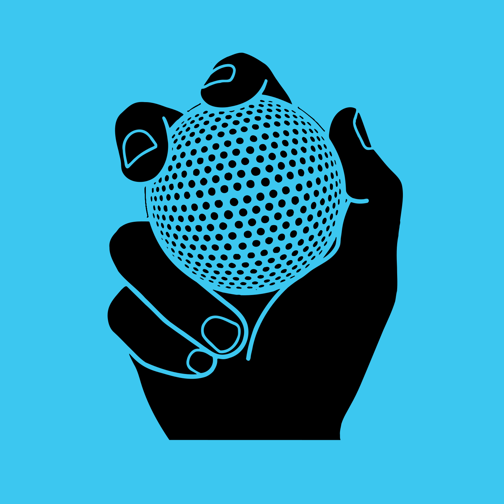
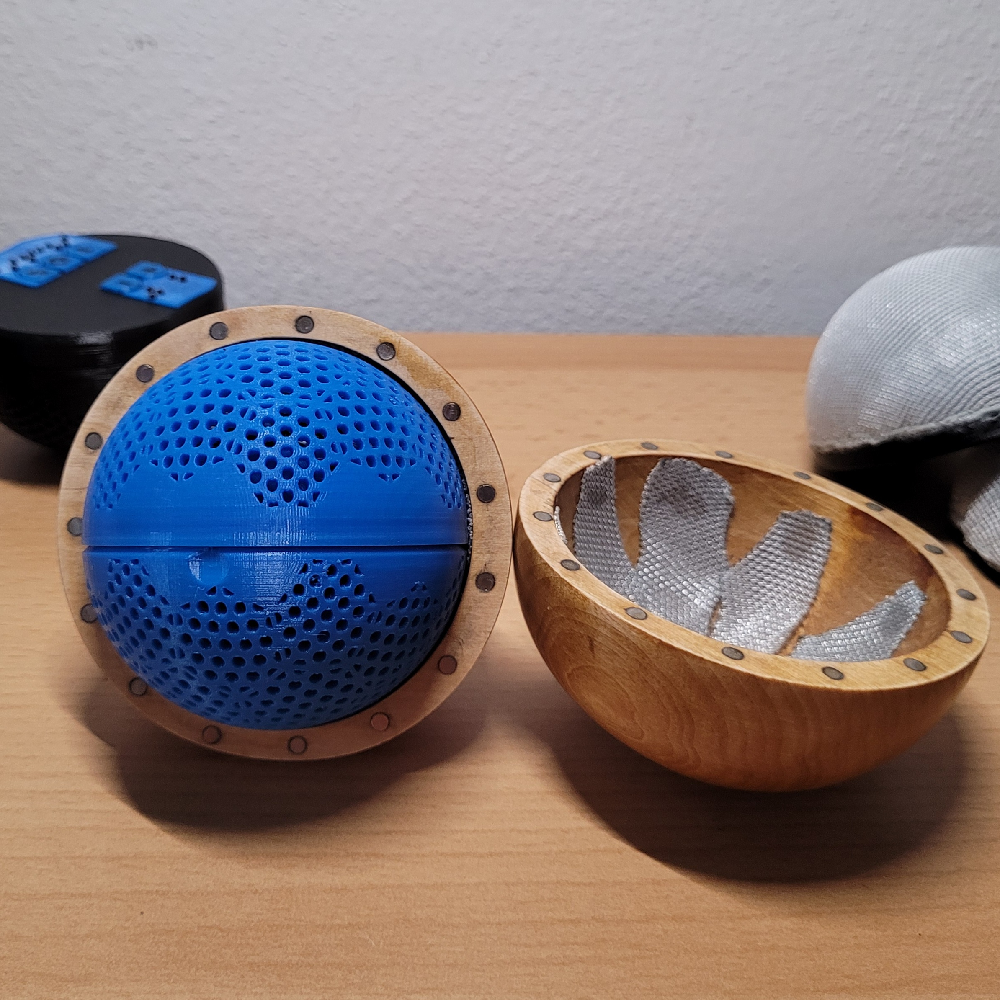

Úvod
Co to vlastněje?
Vítejte na stránce, která dokumentuje bakalářksý projekt Toy4Blind.
Cílem projektu je vyvinout interaktivní hračku pro zrakově pstižené děti.
Níže se dozvíte stručné informace o komponentách a funkci hračky.
Podrobnější informace jsou rozděleny do 4 kategorií Hardware, Firmware, Design a About v nichž naleznete podrobněší popis.

Hračka
Co asi dělá?
Hračka se snaží získat pozornost dítěte pomocí audio a haptické odezvy a to díky klasifikátoru. Hračka rozpoznvá 5 jednoduchých stavů kterými je pád, poklepání, kutálení, kruh a klidový stav.
Na základě těchto tříd hraje přidělený zvuk. Abych to trochu upřesnil řekněme že dítě hračku upustí hračka akci rozpozná a přehraje zvuk kočky.
Moje vize je přidat více gest zpřesnit jejich rozpoznáváaní a také vymyslet jednoduché herní režimi, které by zážitek ze hry prohloubily.


Ovladč
Jak hračku ovládat?
Ovladač je prvkem volitelným což je zmíněno níže, každopádně pokud máte s hračkou v plánu pouze jednoduší akce je to mírné usnadnění.
Funkce:
- připojit se k několika hračkám
- prohazovat ovládanou hračku
- měnit hlasitost
- měnit zvukovou kategorii
- měnit herní režim
- vypínat hračku
Pro ovládání hračky je nejprve nutné se k ní připojit pomocí BLE. Ovladač může být momentálně připojený až k 2 hračkám.
Aplikace
K čemu aplikace?
Bez možnosti úpravy audia by se hračka po chvíli stala leda tak těžítkem.
Aby to takhle neskončio, rozhodl jsem se udělat aplikaci, která umožňuje hračku nejen ovládat, ale také nahrávat vlastní zvuky (wav soubory 16bit 44,1kHz) o maximální délce 2s (delší není třeba).
Aplikace běží pouze na androidu a snažís se o nový Material Design
S ablikací se otevýrá spoustu možností co na hračce ladit oproti 5 talčítkovému fyzickému ovladači ale jak jsem si vysvětli předtím i ten má své opodstatnění.


Nabíjení
Kam se strká nabíječka?
Z důvodu přístupnosti jsem zvolil bezdrátové nabíjení, které také umožňuje mít uzavřenou elektroniku.
Tedy k nabití stačí položit hračku správnou orientací, která je naznačena výřezem v obalu hračky, na libovolnou bezdrátovou nabíječku s certifikací Qi1 a vyšší.
Na obrázku je také vidět nabíjecí redukce, která je kompaibilní s MagSafe a zaručí správné zarovnání, pro maximální rychlost nabíjení.
Pro jednoduchost má ovladač stejný druh nabíjení.
Obal
Na co obal?
Obal má funkci mechanické ochrany a také estetiky.
Experimentoval jsem s 3D tiskem výsledkem je látkovo-plastový obal který se upíná pomocí závitu.
Druhý obal vznikl na základě debaty s rodiči nevidomé holčičky které byla hračka určena. Jedná se o drřevěný obal který se na hračku upíná magneticky.
Ačkoly jsou obaly hezké mají dvě nevýhody zaprvé hračku dost zvětšuí a také je nutné je odejmout před nabíjením.
